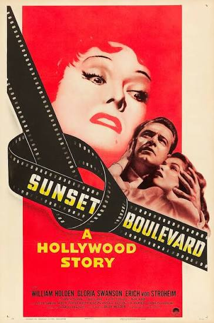
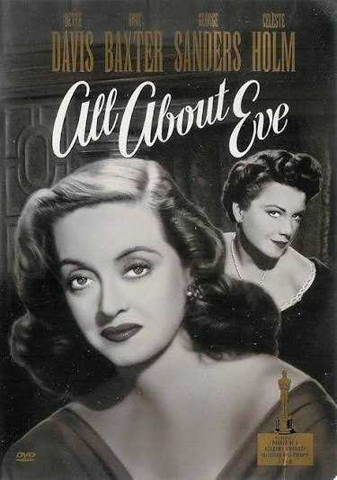
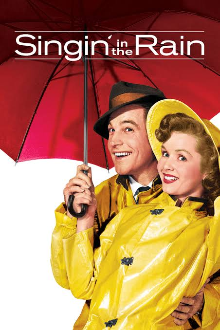
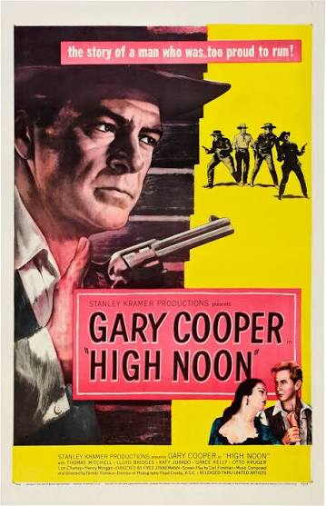
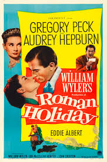
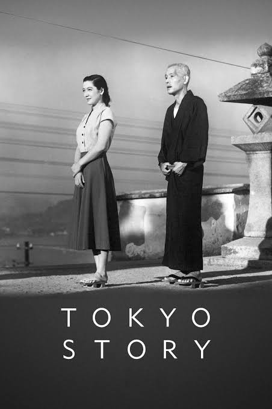
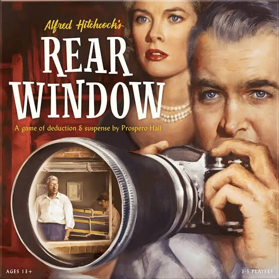
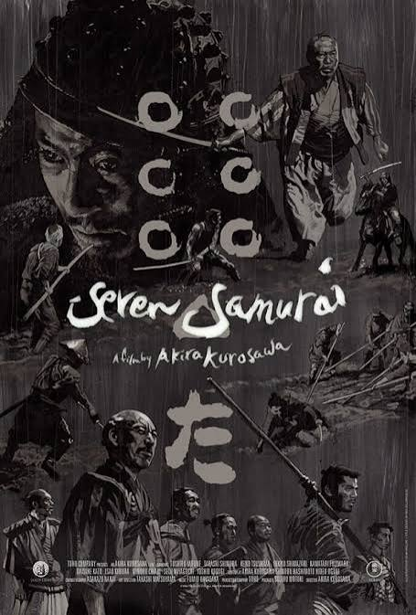
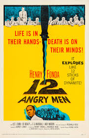

LA EDAD DE ORO DEL CINE
Las Grandes Películas de los Años 50
La década de 1950 dejó algunas de las obras más
influyentes de la historia del cine. El drama,
el suspense, la comedia, el cine japonés y los
grandes musicales demostraron que una película
podía entretener y explorar las emociones y los
problemas de la sociedad.
10 películas imprescindibles
Descubre diez clásicos de diferentes estilos.
Cada tarjeta incluye el espacio para el póster,
el año de estreno, el género y una explicación
de su importancia.

1950
Sunset Boulevard
Drama / Cine negro
Billy Wilder retrata el lado oscuro de
Hollywood a través de una antigua estrella
del cine mudo que sueña con regresar a la fama.
Destaca por su guion y su crítica a la industria.

1950
All About Eve
Drama
Una joven admiradora se acerca a una actriz
consagrada y comienza una lucha por el éxito.
Es una historia sobre la ambición, la fama
y los celos.

1950
Rashomon
Drama / Misterio
Akira Kurosawa presenta distintas versiones
de un mismo crimen. La película cuestiona
la verdad y la memoria, y ayudó a dar a conocer
el cine japonés internacionalmente.

1952
Singin' in the Rain
Musical / Comedia
Una comedia musical sobre Hollywood durante
la transición del cine mudo al sonoro.
Sus canciones, coreografías y humor la
convirtieron en un clásico del género.

1952
High Noon
Western / Drama
Un sheriff debe enfrentarse a unos pistoleros
mientras descubre quién está dispuesto a
ayudarlo. Su tensión narrativa renovó el
western tradicional.

1953
Roman Holiday
Romance / Comedia
Una princesa escapa de sus obligaciones
durante un día en Roma y conoce a un periodista.
Audrey Hepburn ganó el Óscar a mejor actriz
por su interpretación.

1953
Tokyo Story
Drama
Yasujiro Ozu cuenta la visita de una pareja
de ancianos a sus hijos en Tokio. Reflexiona
sobre la familia, el paso del tiempo
y la soledad.

1954
Rear Window
Suspense / Misterio
Alfred Hitchcock crea una historia de suspense
sobre un fotógrafo que sospecha que su vecino
ha cometido un asesinato. Destaca por su tensión
y su uso del punto de vista.

1954
Seven Samurai
Acción / Aventura
Siete samuráis defienden una aldea de los
bandidos. Su montaje, personajes y escenas
de acción influyeron profundamente en el
cine de aventuras posterior.

1957
12 Angry Men
Drama judicial
Doce miembros de un jurado deliberan sobre
un caso de asesinato. La película examina
los prejuicios, la justicia y la importancia
de la duda razonable.
Ganadoras del Óscar a mejor película
Estas películas se estrenaron entre 1950 y 1959.
El año indicado es el de estreno y se señala
también el año de la ceremonia del Óscar.
-
1950
All About Eve
Óscar entregado en 1951. Drama sobre la ambición en el teatro.
-
1951
An American in Paris
Óscar entregado en 1952. Musical romántico ambientado en París.
-
1952
The Greatest Show on Earth
Óscar entregado en 1953. Drama ambientado en el mundo del circo.
-
1953
From Here to Eternity
Óscar entregado en 1954. Drama sobre soldados en Hawái antes de Pearl Harbor.
-
1954
On the Waterfront
Óscar entregado en 1955. Drama sobre la corrupción sindical en los muelles.
-
1955
Marty
Óscar entregado en 1956. Drama sobre un hombre soltero que busca amor.
-
1956
Around the World in 80 Days
Óscar entregado en 1957. Aventura basada en la novela de Julio Verne.
-
1957
The Bridge on the River Kwai
Óscar entregado en 1958. Drama bélico sobre prisioneros de guerra.
-
1958
Gigi
Óscar entregado en 1959. Musical romántico ambientado en París.
-
1959
Ben-Hur
Óscar entregado en 1960. Épica histórica famosa por su carrera de cuadrigas.
Nota: se indica el año de estreno de cada película;
el año del Óscar aparece en la descripción.
© Cine Clásico. Página educativa.
Diseño basado en Halcyonic de HTML5 UP.